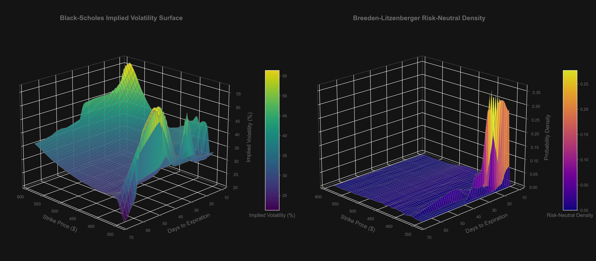

GLD Options Analysis: Black-Scholes + Breeden-Litzenberger
Spot: $455.46 | Data as of February 08, 2026
Derivatives Mapping Engine
This piece explains the fundamentals of modern data infrastructure — warehouses, pipelines, and analytics layers — in under two minutes.
It’s written for operators, investors, and anyone trying to understand how modern companies actually move data.